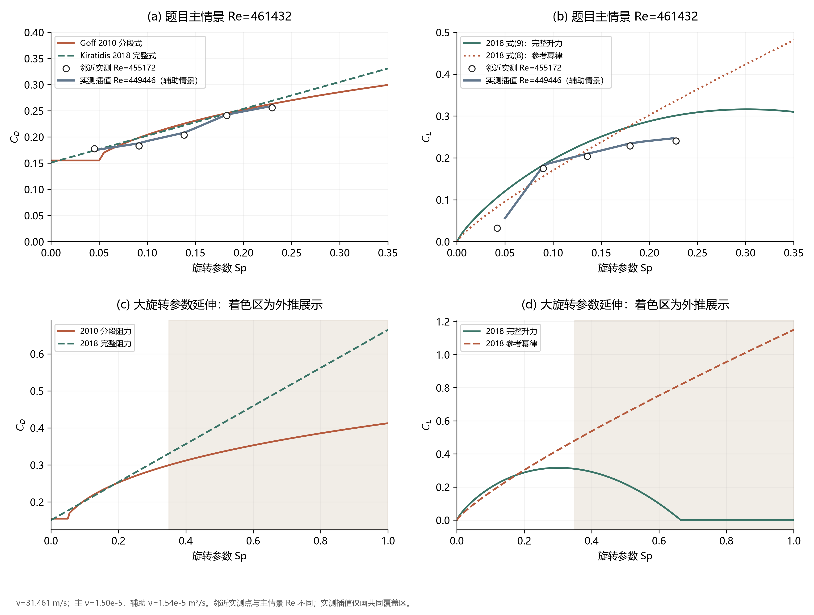

足球气动参数 · 证据与方法
2026-11-07 · Teamgeist 主对照 · 从原文、实测图形和源码到参数交接。
完整交接说明 · 主对照 CSV · 验证记录
1 · 来源核查 五篇指定论文
- Asai 2007：搜索原始附件 → 未取得数表 → 提取 PDF 矢量标记。图4校准对数 Re 轴；图8、9校准线性 Sp 轴。110个提点
- Goff 2010、2012：区分阻力拟合与升力轨迹实验；没有将未提供的 CL 公式补写为作者结论。
- Kiratidis 2018：核对表1和式5–9；查阅 arXiv TeX 源包，确认公式及参考条件。
- Grad 2026：取得官方补充§8.4 → 查阅公开代码和 uv.lock → 对照 MuJoCo 3.8.1 力矩源码。
2 · 系数定义 量纲与方向
- 相对空气速度 → Re=2rv/ν，Sp=rω/v；把 CS 统一映射到 Magnus 横向系数 CL。
- CD：2010 logistic/分段幂律，与2018高速尾项/旋转修正。
- CL：2018参考幂律与完整式分别列出；实测插值只在相邻 Re 行的共同 Sp 覆盖区计算。
- CQ：平动动压口径 ∝Sp²，旋转动压口径近似常数；Sp⁻² 是归一化转换因子。
3 · 题目数值与对照 4428行结果
- 中心差分代表速度31.461 m/s；项目黏度下 Re≈461432，比旋转实测上限高1.38%。
- 主扫描 Sp=0–0.35；扩展到1时标明外推。原实验逐点比较与题目情景分开保存。
- 阻力公式的高 Re RMSE≈0.011；完整升力公式≈0.043。误差表

4 · 交接建议与复现 求解器未改动
- CD采用速度与旋转关系；CL优先实测插值，并显式处理范围外情景。
- CQ采用核实后的力矩结构；angular_drag=1.5保留为软件初值敏感性情景。
- 提点、计算、绘图、验证脚本分离；SVG与300 DPI PNG同时保存。